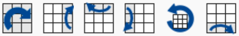
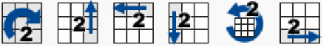

Leírva
Oldalak:
R(ight) L(eft) F(ront) B(ack) U(p) D(own)
M(iddle) E(quator) S(tanding)
Egy betű önmagában azt jelenti, hogy az oldalt szemből nézve, órairányosan el kell forgatni

Egy betű aposztróffal azt jelenti, hogy az oldalt szemből nézve, órairánnyal ellentétesen el kell forgatni

Egy betű a 2-es számmal azt jelenti, hogy az oldalt kétszer el kell forgatni
